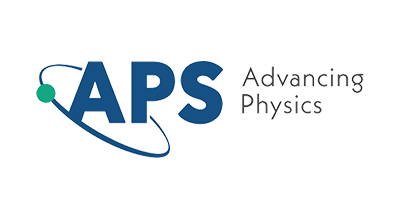

Vedant Dobwal
about
Vedant Dobwal is a 19-year-old Polymath student and independent researcher working at the interface of plasma physics, chaos theory, and nonlinear dynamical systems. He studies at IISER Bhopal (alongside a Data Science & AI program at IIT Guwahati) and focuses on using controlled chaos as a design principle for Maxwell-compatible plasma confinement frameworks. His recent work includes preprints on a novel chaos-engineered plasma confinement model and its perturbative derivation, positioning him as an early-career researcher contributing original ideas to both theoretical and applied physics. Recognized by platforms such as MIT OpenCourseWare’s Spotlight Stories and featured across Google Scholar, ORCID, and Academia.edu, Vedant aims to build a life in which rigorous science, mathematical elegance, and long-term impact on fundamental understanding of Nature naturally align.
research
Derivation of the Controlled-Chaos Perturbation Framework within Maxwell-MHD Dynamics
This technical note provides a detailed derivation of the controlled-chaos perturbation term introduced in an earlier preprint on field-constrained dynamics. Beginning from the two-fluid electron momentum equation, the analysis demonstrates how the perturbation modifies generalized Ohm’s law and contributes a stabilizing, pressure-like term within Maxwell-consistent MHD balance. The work clarifies the mathematical sequence of steps involved in obtaining the perturbation, along with its physical interpretation as a chaos-induced corrective mechanism built into the magnetic–fluid system. Its purpose is not to introduce new assumptions, but to make the internal structure of the framework explicit, transparent, and analytically traceable for future theoretical expansions.
A Novel Maxwell-Compatible Framework for Plasma Confinement through Controlled Chaos
This study introduces a theoretical and computational framework in which controlled chaos is utilized as a stabilizing mechanism for plasma confinement. The approach allows magnetic field structures to self-regulate through tunable perturbation parameters, producing localized attractors within bounded chaotic regions. These attractors restrict energy dispersion and enhance confinement stability without requiring suppression of turbulence. The framework modifies Maxwell-compatible field equations to support these regulated chaotic modes, ensuring consistency with Maxwell’s equations, energy conservation principles, and physical boundary constraints. Numerical simulations show transitions between diffusive and coherent magnetic topologies, revealing distinct confinement regimes. By demonstrating that guided chaoticity can serve as a stabilizing force, this work provides a new perspective on nonlinear plasma behavior with implications for magnetic confinement fusion, advanced plasma control strategies, and broader dynamical-systems research.
Global Contraction and Symmetry-Breaking Thresholds in a Reduced Fluid-Structure Vestibular Model
This work provides a rigorous dynamical-systems foundation for the fluid-structure interactions within the human vestibular system, specifically the semicircular canals. By applying a specialized scalar contraction inequality, the research formally proves that cupular pressure dynamics are globally exponentially contracting under head motion. This mathematical proof confirms that the biological system is inherently stable and will accurately track motion regardless of initial disturbances. The study further utilizes asymptotic analysis to derive explicit thresholds for "small" and "large" tissue stiffness, explaining how the ear naturally transitions between velocity-tracking and acceleration-tracking sensory regimes. Finally, the research identifies a quantitative symmetry-breaking threshold via an algebraic inequality. This threshold defines the exact physical conditions under which asymmetric fluid flow begins to dominate the system, providing a predictive framework for understanding how changes in inner-ear mechanics—whether due to age or pathology—impact balance and motion perception.
On a Circulation Functional Associated with Planar Vector Fields
This work introduces a geometric scalar functional defined using the symmetric part of the Jacobian of a planar vector field. The circulation functional measures accumulated tangential metric deformation along closed curves and provides a new diagnostic framework for detecting, classifying, and analyzing limit cycles in dynamical systems. The framework establishes that zeros of the circulation functional correspond to balanced tangential deformation, while the order of vanishing defines a degeneracy index related to limit-cycle multiplicity. For polynomial vector fields, the formulation yields degree-based bounds on the number and multiplicity of detectable cycles, connecting geometric deformation directly with classical bifurcation theory. Applications are demonstrated across standard systems including Hopf-type models, Liénard systems, and near-Hamiltonian perturbations, showing consistency with Melnikov theory and Abelian integral conditions while avoiding return maps and time parametrization. The work provides a unified geometric perspective on existence, stability, and multiplicity of limit cycles through local differential structure and global curve integration.
blog
I write to refine my thinking, to document the evolution of ideas, and to make sense of the abstract structures that guide my research. The blog serves as a personal archive where mathematics, physics, and reflection converge into a narrative of curiosity and discipline.
From a Lecture Hall to a Framework: My Accidental Path Through Chaos
A short account of how unplanned exploration in chaos theory led toward formulating a controlled-chaos plasma framework, and how academic structures unexpectedly tie into emergent ideas.
Notes I Wrote (Why?)
A reflection on the motivations behind writing structured physics and mathematics notes—clarity, accessibility, and the desire to build conceptual bridges for learners.
interests
astronomy, cosmology, energy physics, nuclear physics, quantum gravity/mechanics, turing patterns, mathematics (geometry, calculus, higher algebra), fluid mechanics, chaos theory, nonlinear systems,etc
hobbies
sketching, painting, observing and studying nature / people / beings, journaling, poetry, creative arts, graphic designing, watching movies, reading books, listening to music (sitar, R&B, pop, indie, acoustics), singing.
favorites
books
Whitney Hanson — Home and Harmony (anthologies),
Anne Marie — You Deserve Better,
affiliations
 IISER Bhopal
IISER Bhopal
 IIT Guwahati — Data Science & AI
IIT Guwahati — Data Science & AI

APS Student Member
 NASA Citizen Science Volunteer
NASA Citizen Science Volunteer
considerations & mentions
MIT Open Learning — Spotlight Story (2026)
My academic journey and research-driven learning approach were featured by MIT Open Learning in their Spotlight Stories.
Read Feature →
ResearchGate
Zenodo
Academia.edu
ORCID
NUPC Conference Presentee
University of Pennsylvania — Philosophy of Science
UC Irvine — Emergent Phenomena in Science
CERN Education Solvay Programme
University of London — Understanding Research Methods
NASA Open Science 101
HKUST — Introductory General Relativity & Cosmology
contact
Official (affiliation): vedant24@iiserb.ac.in
GitHub: github.com/Wristyspider834
Blog: outphysics.blogspot.com
LinkedIn: linkedin
ORCID: orcid.org/0009-0005-1124-0944
ResearchGate: profile
Google Scholar: scholar profile